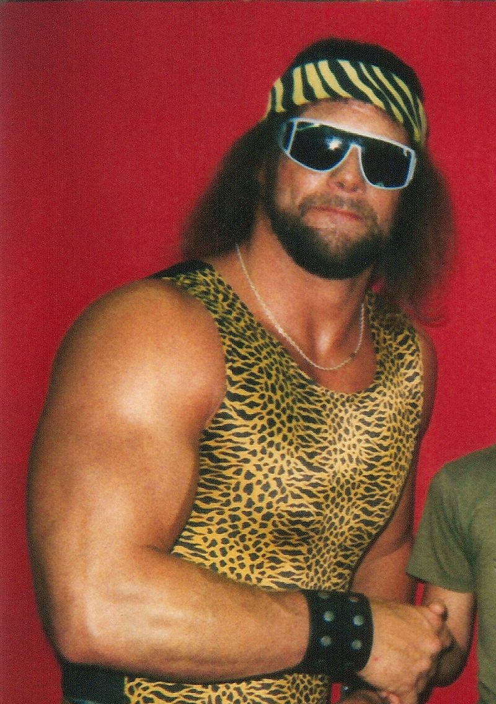

The Weathercock
Look before you lock!
Target Audience
The target audience of this site are local residents of Fish Haven, Preston, and Soda Springs in the state of Idaho, including visitors and entrepreneurs who are living out of state. It is open to all age group and can be accessed anywhere at anytime online with a web browser running on any computer or mobile device.
| Persona 1 | |
|---|---|
| Name: | Randy Savage |
| Photo: |  |
| Job Title: | Professional wrestler, wrestling promoter |
| Demographics: | 58 years old Has a degree in broadcasting Lives in Miami, Florida |
| Goals and Tasks: | Very dynamic and energetic, always looking for potential places to hold wrestling shows. Regularly checks weather forecast of different locations for his future events. |
| Technology: | Works all the time with his iPhone, checking news and updates with various apps. Very active on social media sites promoting his business. |
| Favorite Quote: | "Expect the unexpected in the kingdom of madness! Oh yeah!" |
| Persona 2 | |
|---|---|
| Name: | Thomas Anderson |
| Photo: | |
| Job Title: | Computer Programmer, White-hat Hacker |
| Demographics: | 40 years old Has a degree in Computer Science Lives in Washington DC |
| Goals and Tasks: | Works as a freelancer IT security analyst for different companies. Always on the go and checks the weather forecast regularly for his outdoor activities. |
| Technology: | Uses a laptop and an android smartphone to access information on different web servers. Moves fast and always on a stealth mode. |
| Favorite Quote: | "You didn't come here to make a choice, you already made it. You're here to try to understand why you made it." |
Scenarios
- Randy checks the weather forecast for the month. He needs to make sure that the weather will not interfere with his plans.
- Randy coordinates with his team about next week's show out of state. He wants some information about their next trip to see if they're going to cancel it due to a severe storm.
- Randy is worried about this weekend's show. He has to be sure that the rain will not ruin their show. He has been reading some comments on the news and social media about the weather.
- Thomas checks his phone if he can safely travel tonight to western Idaho for a business trip. A tornado forecast is in effect for tomorrow.
- Thomas wants to spend the weekend on his bike for a long trip north. He checks the weather for the weekend using his laptop.